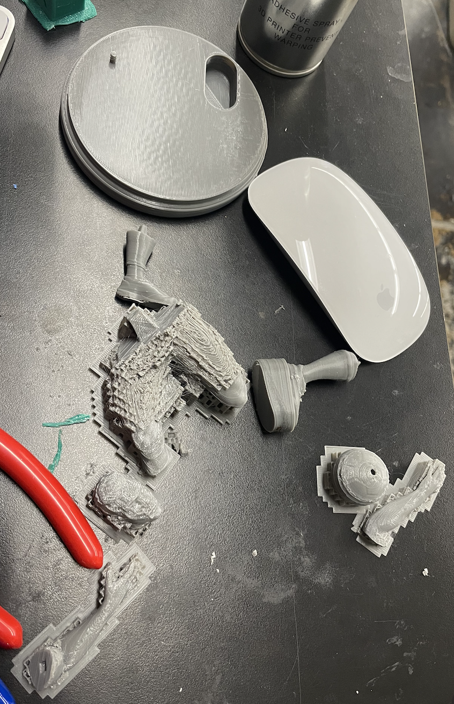
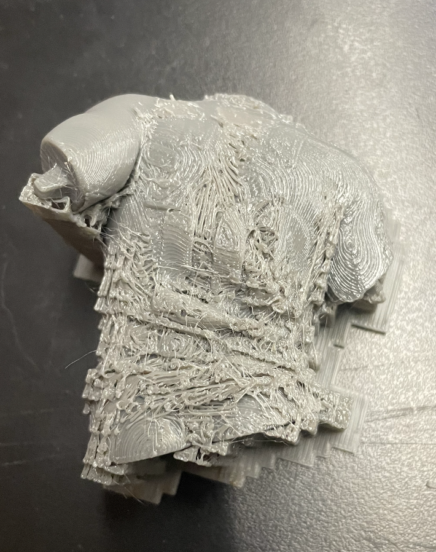

<br>
#### Week 5: 3D printing
<p1>
For the 3D printing week I decided to scan my friends head and try to print that inititally, but when I scanned
their head using the camera in lab, it did not work out well. Their head ended up having holes in it and it would
have needed too much support to where it was more support than anything of substance.
</p1>
<p1>
I then decided to just try and make a messi figuring instead for my friend that end up printing like this
</p1>


<p1>
Getting all the support off took a lot more time than anticipated because I hadn't realized what a tedious process
it could be. It might have been easier and more efficient to simly just reprint the figurine with less support and just
try placing it on the tray in a different wayy, but by the time I realized that I was too deep into it and thus just proceeded
with going down that route.
</p1>